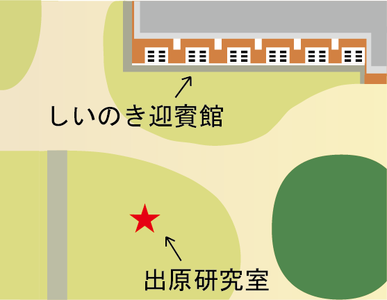

金澤月見光路2026
体験型プロジェクションマッピング
出原研究室
10/9(Fri)~10/11(Sun) 18:00~21:00
月夜のシイノキへ 想いを紡ぐ光
しいのき迎賓館のシイノキは、樹齢300年を超え長く金沢の市民に愛されてきました。金澤月見光路の特別な夜、その想いが月明かりにより光の精となって姿を現します。
人々の想いがシイノキに宿るように、あなたも光の精に想いを託し、シイノキを光で鮮やかに彩りましょう！
体験内容
- しいのき迎賓館前の芝生広場には、「光の精」がいます。
- その場所に行くと、皆さんの足元に「光の精」が集まり、シイノキに光結（ひかり）を放ちます。
- 皆さんでシイノキを光で彩ろう！
開催概要
- 日時
- 10/9~10/11 18:00~21:00
- 場所
- しいのき迎賓館前


